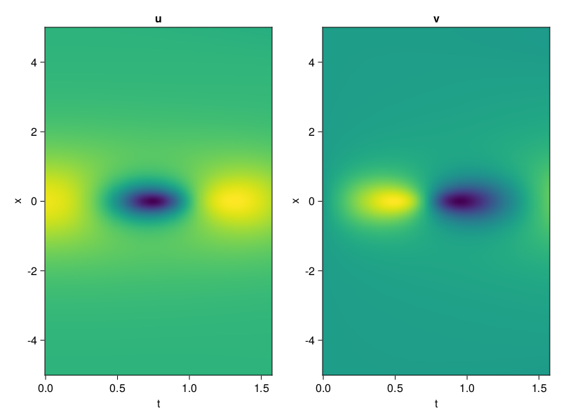
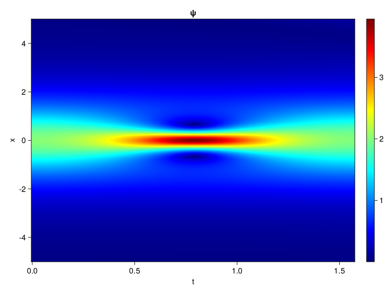
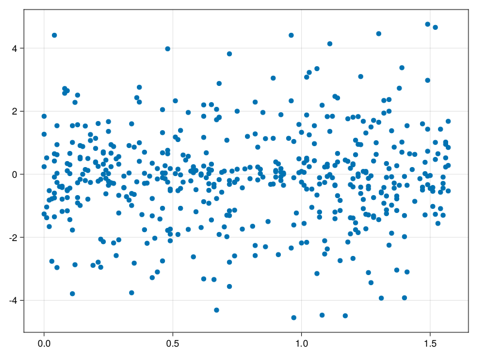

Schrödinger equation
The nonlinear Shrödinger equation is given by
\[\mathrm{i} \partial_t \psi=-\frac{1}{2} \sigma \partial_{x x} \psi-\beta|\psi|^2 \psi\]
Let $\sigma=\beta=1, \psi=u+v i$, the equation can be transformed into a system of partial differential equations
using ModelingToolkit, IntervalSets, Sophon, CairoMakie
using Optimization, OptimizationOptimJL
@parameters x,t
@variables u(..), v(..)
Dₜ = Differential(t)
Dₓ² = Differential(x)^2
eqs=[Dₜ(u(x,t)) ~ -Dₓ²(v(x,t))/2 - (abs2(v(x,t)) + abs2(u(x,t))) * v(x,t),
Dₜ(v(x,t)) ~ Dₓ²(u(x,t))/2 + (abs2(v(x,t)) + abs2(u(x,t))) * u(x,t)]
bcs = [u(x, 0.0) ~ 2sech(x),
v(x, 0.0) ~ 0.0,
u(-5.0, t) ~ u(5.0, t),
v(-5.0, t) ~ v(5.0, t)]
domains = [x ∈ Interval(-5.0, 5.0),
t ∈ Interval(0.0, π/2)]
@named pde_system = PDESystem(eqs, bcs, domains, [x,t], [u(x,t),v(x,t)])\[ \begin{align} \frac{\mathrm{d}}{\mathrm{d}t} u\left( x, t \right) =& - \frac{1}{2} \frac{\mathrm{d}^{2}}{\mathrm{d}x^{2}} v\left( x, t \right) - \left( \left|u\left( x, t \right)\right|^{2} + \left|v\left( x, t \right)\right|^{2} \right) v\left( x, t \right) \\ \frac{\mathrm{d}}{\mathrm{d}t} v\left( x, t \right) =& \frac{1}{2} \frac{\mathrm{d}^{2}}{\mathrm{d}x^{2}} u\left( x, t \right) + \left( \left|u\left( x, t \right)\right|^{2} + \left|v\left( x, t \right)\right|^{2} \right) u\left( x, t \right) \end{align} \]
pinn = PINN(u = Siren(2,1; hidden_dims=16,num_layers=4, omega = 1.0),
v = Siren(2,1; hidden_dims=16,num_layers=4, omega = 1.0))
sampler = QuasiRandomSampler(500, (200,200,20,20))
strategy = NonAdaptiveTraining(1,(10,10,1,1))
prob = Sophon.discretize(pde_system, pinn, sampler, strategy)OptimizationProblem. In-place: true
u0: ComponentVector{Float64}(u = (layer_1 = (weight = [0.1005624532699585 -0.3270198702812195; -0.32621127367019653 -0.4872865080833435; … ; 0.4901888966560364 -0.0693088173866272; 0.45732349157333374 0.276189923286438], bias = [0.0; 0.0; … ; 0.0; 0.0;;]), layer_2 = (weight = [-0.013674814254045486 0.4885256886482239 … 0.4496806859970093 0.15246792137622833; -0.03577359393239021 0.5985602140426636 … -0.3708035945892334 0.14080959558486938; … ; 0.5737488865852356 -0.02866896614432335 … -0.14945118129253387 0.28374168276786804; 0.521406352519989 -0.0458400659263134 … 0.3809491991996765 0.016530228778719902], bias = [0.0; 0.0; … ; 0.0; 0.0;;]), layer_3 = (weight = [0.29203301668167114 0.14529168605804443 … -0.3617297112941742 0.14382416009902954; 0.5023803114891052 0.010955181904137135 … 0.5635797381401062 0.41919729113578796; … ; 0.2199375182390213 -0.3414386510848999 … -0.5475412607192993 0.24564383924007416; -0.2614579200744629 -0.5039833188056946 … -0.014166399836540222 0.048498816788196564], bias = [0.0; 0.0; … ; 0.0; 0.0;;]), layer_4 = (weight = [0.2945590615272522 -0.1836409568786621 … -0.023760123178362846 -0.028947828337550163; 0.39169085025787354 -0.5231766104698181 … 0.06116914376616478 0.02924654632806778; … ; 0.5053614974021912 0.43087342381477356 … -0.21376189589500427 0.06674426794052124; 0.11814258992671967 0.45153146982192993 … 0.19164253771305084 -0.09025808423757553], bias = [0.0; 0.0; … ; 0.0; 0.0;;]), layer_5 = (weight = [-0.3338404595851898 -0.38371387124061584 … -0.3111647665500641 -0.4440711736679077], bias = [0.0;;])), v = (layer_1 = (weight = [0.2617255449295044 -0.17774581909179688; -0.3565523028373718 -0.43098604679107666; … ; -0.02884364128112793 -0.14802414178848267; 0.28703445196151733 0.4562435746192932], bias = [0.0; 0.0; … ; 0.0; 0.0;;]), layer_2 = (weight = [-0.4207155406475067 -0.19056205451488495 … 0.39382204413414 0.4934755563735962; -0.21921014785766602 0.5319241881370544 … -0.3080601990222931 0.6064403653144836; … ; -0.28944113850593567 -0.49995890259742737 … 0.29166245460510254 -0.1595921814441681; 0.14373648166656494 -0.1716490238904953 … -0.22594787180423737 0.13487517833709717], bias = [0.0; 0.0; … ; 0.0; 0.0;;]), layer_3 = (weight = [-0.35856732726097107 0.3942982256412506 … 0.4975295066833496 -0.1408918797969818; 0.3082653880119324 -0.5863070487976074 … -0.44699880480766296 -0.2769342362880707; … ; -0.3605680465698242 -0.39195746183395386 … 0.4676317870616913 0.5916309952735901; -0.29347988963127136 -0.16252760589122772 … 0.07201080769300461 -0.39040467143058777], bias = [0.0; 0.0; … ; 0.0; 0.0;;]), layer_4 = (weight = [-0.4427434504032135 0.5297481417655945 … 0.28021475672721863 -0.25579768419265747; 0.22491104900836945 0.5699060559272766 … -0.39176955819129944 -0.28231489658355713; … ; -0.16199149191379547 -0.19276286661624908 … 0.2847653031349182 0.5546520352363586; 0.2794433534145355 0.2623218297958374 … 0.2669544219970703 0.3818625807762146], bias = [0.0; 0.0; … ; 0.0; 0.0;;]), layer_5 = (weight = [0.40160900354385376 -0.3361239731311798 … 0.09320642799139023 -0.11847145110368729], bias = [0.0;;])))Now we train the neural nets and resample data while training.
function train(pde_system, prob, sampler, strategy, resample_period = 500, n=10)
bfgs = BFGS()
res = Optimization.solve(prob, bfgs; maxiters=2000)
for i in 1:n
data = Sophon.sample(pde_system, sampler)
prob = remake(prob; u0=res.u, p=data)
res = Optimization.solve(prob, bfgs; maxiters=resample_period)
end
return res
end
res = train(pde_system, prob, sampler, strategy)u: ComponentVector{Float64}(u = (layer_1 = (weight = [0.5245489117346672 0.16677083142652802; -0.3614757590595665 -0.006770240784189667; … ; 1.2801767138796756 -0.5364484096765415; 0.7517362136415523 0.42863316201888474], bias = [-0.15910116039037484; 0.35089101333486566; … ; 0.2549721323349494; 0.0972972132543356;;]), layer_2 = (weight = [0.4939695119917168 0.582017999748031 … 0.9973582688406195 0.3753302711925215; -0.1804970617314916 0.7540701629698897 … 0.16788018265389182 0.2668063269308731; … ; 0.7303525342865176 0.015226189229047232 … 0.16955122498579314 0.11102472752098336; 0.6587398560012627 0.08582814354605973 … 0.1015929021747725 0.28816020457827896], bias = [0.17199187795851362; 0.13008576426165605; … ; 0.035886571765180786; -0.1524712867796035;;]), layer_3 = (weight = [0.016148578839702773 0.49548839226467256 … -0.19696485527387178 0.37889813710902276; 0.34937193320769533 0.13435996220049495 … 0.3764460999976088 0.6561171818887485; … ; 0.07164912958048815 -0.36790643641511234 … -0.8315486323953389 0.1353978756566119; -0.1917977681209479 -0.28392190391613503 … 0.3466110189004484 0.3148622335485538], bias = [0.2355920372608178; 0.12619472626046507; … ; -0.06698934184389224; -0.5586714621046576;;]), layer_4 = (weight = [0.13048996391700285 -0.04407933256836765 … 0.15149371650156782 -0.13800941823141255; -0.27349602562146474 -1.1468329152720103 … 0.399010462856436 0.3716288634633282; … ; 0.4929755480053294 0.26100437826002726 … -0.1937888047283841 -0.04729947361403197; 0.36076554583001635 0.3316365946380481 … 0.21999823280467615 -0.14608308857721117], bias = [-0.026489675135664276; 0.5409380372109662; … ; -0.27694188930678465; 0.3944800437738898;;]), layer_5 = (weight = [-0.6081699475845288 -0.0020925588900293263 … -0.29444383804275004 -0.912130441668309], bias = [0.023963381634149572;;])), v = (layer_1 = (weight = [0.42007539031483926 0.24343461065177038; -0.4859499605866778 -0.3117034610551813; … ; -0.08394800224329267 -0.36675002227145775; 0.3182537057481034 0.14646699080214032], bias = [-0.03945507514699697; 0.22698699398754663; … ; 0.4267961374975837; -0.11547878097727639;;]), layer_2 = (weight = [-0.350568033792991 -0.28430588680433044 … 0.3271522519084725 0.5327620430849132; -0.3487838464982096 0.44128984256636716 … -0.2912592884543171 0.6266208911690705; … ; -0.5746311559162379 -0.25784511251816844 … 0.3641924232564347 -0.37220545298668584; 0.2438433814266875 -0.49311393087453076 … -0.282094625086733 0.4808438146288431], bias = [-0.002299121387231633; -0.4945983317970146; … ; 0.032534675091048966; 0.020126787215335087;;]), layer_3 = (weight = [-0.4117266958973931 0.33981606152958604 … 0.40601630418385837 -0.10477288344598797; 0.49096458374856766 -0.6309748191781004 … -0.42361490522314454 -0.10354990068554512; … ; -0.27538175416567556 -0.3359852669329388 … 0.5460949672377241 0.44632887238579505; -0.28560116805984104 -0.20418935121445175 … 0.11536017040387656 -0.4122895160636367], bias = [0.13825500608617153; -0.09117644233162231; … ; 0.024366973128295683; 0.11363693345115487;;]), layer_4 = (weight = [-0.1925265264916067 0.25834294081705894 … 0.10988376238552885 0.21108055944679746; 0.4362074150805899 0.3873286967677631 … -0.1874049242510651 0.11082835399731245; … ; -0.18589756576745267 -0.05422513357832213 … 0.15625908621053358 0.7670255285008044; 0.014331764518731843 0.6447453601086293 … 0.30259546722827946 0.16516827880825732], bias = [0.0633062522585351; 0.11876036016576574; … ; -0.20242772155665617; 0.2120587497982073;;]), layer_5 = (weight = [0.6676279190397172 -0.35820673380733103 … 0.5023521897858889 0.6171395776416424], bias = [-0.17901535609413197;;])))phi = pinn.phi
ps = res.u
xs, ts= [infimum(d.domain):0.01:supremum(d.domain) for d in pde_system.domain]
u = [sum(phi.u(([x,t]), ps.u)) for x in xs, t in ts]
v = [sum(phi.v(([x,t]), ps.v)) for x in xs, t in ts]
ψ = @. sqrt(u^2+ v^2)
axis = (xlabel="t", ylabel="x", title="u")
fig, ax1, hm1 = heatmap(ts, xs, u', axis=axis)
ax2, hm2= heatmap(fig[1, end+1], ts, xs, v', axis= merge(axis, (; title="v")))
display(fig)
axis = (xlabel="t", ylabel="x", title="ψ")
fig, ax1, hm1 = heatmap(ts, xs, ψ', axis=axis, colormap=:jet)
Colorbar(fig[:, end+1], hm1)
display(fig)
Customize Sampling
Bascially any sampling method is supportted. For example we can sample data according to the predicted solution.
using StatsBase
data = vec([[x, t] for x in xs, t in ts])
wv = vec(ψ)
new_data = wsample(data, wv, 500)
new_data = reduce(hcat, new_data)
fig, ax = scatter(new_data[2,:], new_data[1,:])
prob.p[1] = new_data
prob.p[2] = new_data
prob = remake(prob; u0 = res.u)
# res = Optimization.solve(prob, bfgs; maxiters=1000)OptimizationProblem. In-place: true
u0: ComponentVector{Float64}(u = (layer_1 = (weight = [0.5245489117346672 0.16677083142652802; -0.3614757590595665 -0.006770240784189667; … ; 1.2801767138796756 -0.5364484096765415; 0.7517362136415523 0.42863316201888474], bias = [-0.15910116039037484; 0.35089101333486566; … ; 0.2549721323349494; 0.0972972132543356;;]), layer_2 = (weight = [0.4939695119917168 0.582017999748031 … 0.9973582688406195 0.3753302711925215; -0.1804970617314916 0.7540701629698897 … 0.16788018265389182 0.2668063269308731; … ; 0.7303525342865176 0.015226189229047232 … 0.16955122498579314 0.11102472752098336; 0.6587398560012627 0.08582814354605973 … 0.1015929021747725 0.28816020457827896], bias = [0.17199187795851362; 0.13008576426165605; … ; 0.035886571765180786; -0.1524712867796035;;]), layer_3 = (weight = [0.016148578839702773 0.49548839226467256 … -0.19696485527387178 0.37889813710902276; 0.34937193320769533 0.13435996220049495 … 0.3764460999976088 0.6561171818887485; … ; 0.07164912958048815 -0.36790643641511234 … -0.8315486323953389 0.1353978756566119; -0.1917977681209479 -0.28392190391613503 … 0.3466110189004484 0.3148622335485538], bias = [0.2355920372608178; 0.12619472626046507; … ; -0.06698934184389224; -0.5586714621046576;;]), layer_4 = (weight = [0.13048996391700285 -0.04407933256836765 … 0.15149371650156782 -0.13800941823141255; -0.27349602562146474 -1.1468329152720103 … 0.399010462856436 0.3716288634633282; … ; 0.4929755480053294 0.26100437826002726 … -0.1937888047283841 -0.04729947361403197; 0.36076554583001635 0.3316365946380481 … 0.21999823280467615 -0.14608308857721117], bias = [-0.026489675135664276; 0.5409380372109662; … ; -0.27694188930678465; 0.3944800437738898;;]), layer_5 = (weight = [-0.6081699475845288 -0.0020925588900293263 … -0.29444383804275004 -0.912130441668309], bias = [0.023963381634149572;;])), v = (layer_1 = (weight = [0.42007539031483926 0.24343461065177038; -0.4859499605866778 -0.3117034610551813; … ; -0.08394800224329267 -0.36675002227145775; 0.3182537057481034 0.14646699080214032], bias = [-0.03945507514699697; 0.22698699398754663; … ; 0.4267961374975837; -0.11547878097727639;;]), layer_2 = (weight = [-0.350568033792991 -0.28430588680433044 … 0.3271522519084725 0.5327620430849132; -0.3487838464982096 0.44128984256636716 … -0.2912592884543171 0.6266208911690705; … ; -0.5746311559162379 -0.25784511251816844 … 0.3641924232564347 -0.37220545298668584; 0.2438433814266875 -0.49311393087453076 … -0.282094625086733 0.4808438146288431], bias = [-0.002299121387231633; -0.4945983317970146; … ; 0.032534675091048966; 0.020126787215335087;;]), layer_3 = (weight = [-0.4117266958973931 0.33981606152958604 … 0.40601630418385837 -0.10477288344598797; 0.49096458374856766 -0.6309748191781004 … -0.42361490522314454 -0.10354990068554512; … ; -0.27538175416567556 -0.3359852669329388 … 0.5460949672377241 0.44632887238579505; -0.28560116805984104 -0.20418935121445175 … 0.11536017040387656 -0.4122895160636367], bias = [0.13825500608617153; -0.09117644233162231; … ; 0.024366973128295683; 0.11363693345115487;;]), layer_4 = (weight = [-0.1925265264916067 0.25834294081705894 … 0.10988376238552885 0.21108055944679746; 0.4362074150805899 0.3873286967677631 … -0.1874049242510651 0.11082835399731245; … ; -0.18589756576745267 -0.05422513357832213 … 0.15625908621053358 0.7670255285008044; 0.014331764518731843 0.6447453601086293 … 0.30259546722827946 0.16516827880825732], bias = [0.0633062522585351; 0.11876036016576574; … ; -0.20242772155665617; 0.2120587497982073;;]), layer_5 = (weight = [0.6676279190397172 -0.35820673380733103 … 0.5023521897858889 0.6171395776416424], bias = [-0.17901535609413197;;])))